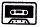

Nascom Journal |
September 1981 · Ausgabe 9 |
Zunächst mal ein großes Lob: Das Journal hat erheblich an Niveau gewonnen, es ist auch ein ganz anderer Geist drin.
Ich finde es sehr gut, so viel langen Assembler-Quellkode abzudrucken. Dazu gleich eine Anmerkung: Zum Testen von A auf Null ist „OR A“ kürzer als „CP 0“; statt „LD A,0“ besser „XOR A“. Wenn man HL mit DE vergleichen will ohne HL zu ändern, eignet sich: „OR A; SBC HL,DE; ADD HL,DE“; da dieses ADD das Zero-Flagbit nicht ändert.
Entgegen der Aussage im letzten Heft: Der englische Nascom-Klub „INMC80“ existiert noch und hat eine ausgezeichnete Zeitschrift „INMC80 News“, sie kommt nur nicht sehr regelmäßig raus. Adresse:
INMC80 Subscriptions,
c/o Oakfield Corner,
________ ____,
Amersham,
Bucks. ___ ___.
Abo (=subscription) kostet 7.50 £ für 1 Jahr.
Ich würde nicht soviel Wert auf pünktliches Erscheinen auch des Journals legen wenn es wenigstens überhaupt erscheint (damit die Redaktion nicht aus Überlastung aufgibt).
Aus den INMC80-News stammt auch die folgende Idee, die man beim Programmieren von relokatiblem Kode braucht: Wenn man z.B. HL mit dem Programmzähler laden will, geht das am einfachsten so: RCALL M1; M1: POP HL (direkt hintereinander!). Durch den RCALL wird der PC auf den Stack geladen, und durch POP landet er in HL. Damit kann man z.B. Tabellen in relokatiblen Programmen erreichen. (Den relativen Call gibt es übrigens auch im T4). In dem Zusammenhang muß ich gestehen, daß mein Progrämmle „Klingel“ in der letzten Ausgabe entgegen der Aussage im Text nicht relokatibel ist, und zwar eben wegen der Tabellenmanipulation. Offenbar hab’ ich mir nix dabei gedacht, als ich das schrieb.
Ein Tip bezüglich ZEAP 2: Da ist in neueren Versionen ein geheimer Befehl eingebaut: Wenn man den Doppelpunkt „:“ eingibt, kommt „Command?“ und man kann alle NAS-SYS Befehle eingeben; praktisch zum Abspeichern des Programms mit „W“.
Dringender Rundruf: Falls irgendjemand die Gleitkomma- Arithmetik des Nascom- Rom-Basic geknackt hat, soll er das doch bitte veröffentlichen! Da hat man nun prima Arithmetik- Programme im Speicher und kann sie nicht benutzen.
Weitere Rundfrage: Wer interessiert sich für LISP? Bei mir läuft ein kleiner Interpreter (aus Dr.Dobbs), den man (wie das FORTH Projekt) gemeinsam weiterentwickeln könnte.
Michael Bach, Stegen.
Aus der Summe der bisherigen Artikel im Nascom-Journal kann man den Eindruck gewinnen, daß es sich beim Nascom im wesentlichen um einen Experimental-Computer handelt, und nicht um ein leistungsfähiges Entwicklungssystem, bzw. Personal-Computer, wie ich ihn kennen und schätzen gelernt habe.
Mein Vorschlag: keine Gehversuche: Graphik Brutal, Nascom-Änderungen, Einfachst-Spiele; sondern: komplexere Anwendungen (Prozessorsteuerung für Cassettenrecorder und Testgeräte oder sonst. Anw.), Datenverwaltungen, Artikel kompakter gestalten, nur das wesentliche, dafür mehr Artikel.
Heddesheim, 1.7.81
Ulrich Wallis
Die Nachricht über die Lucas Logic Ltd., sowie der „neue Wind“, der im Nascom Journal weht, haben mich unheimlich begeistert. Bei Gelegenheit möchte ich auch mit einem meiner Programme einen Beitrag leisten, falls dieses Interesse findet.
Heddesheim, 8.8.81
Ulrich Wallis
Anscheinend sind wir auf dem richtigen Weg. Wir freuen uns auf Ihre
Beiträge! Red.
| Leerkassetten |  | |
|
Speziell geeignet für Datenaufzeichnung. Hochwertiges BASF-Band.
Cassette 5-fach verschraubt. Cassette C10,d.h. 10
Minuten Spieldauer, daher besonders geeignet für
Mikrorechnerprogramme. |
||
|
10 Stk 20 Stk 50 Stk 100 Stk |
19.80 36.00 87.50 160.00 |
Jede Kassette mit selbstklebendem Aufkleber zum Beschriften. |
| Bei: | M K – Systemtechnik | |
| Seite 3 von 28 |
|---|